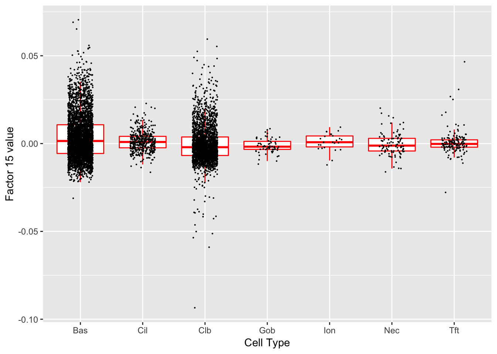
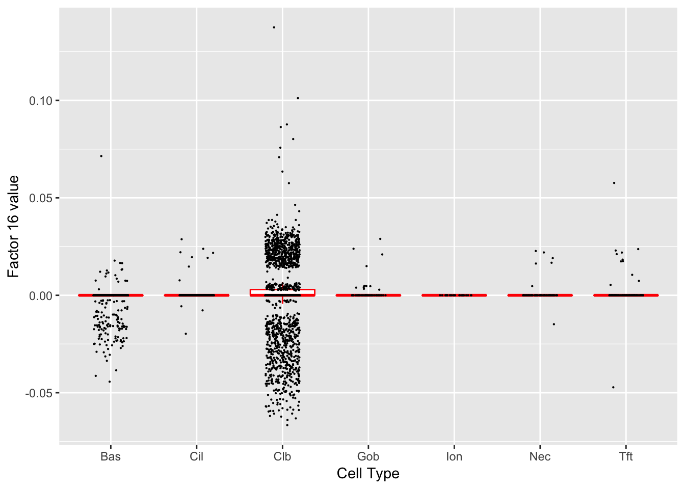

Last updated: 2018-12-06
workflowr checks: (Click a bullet for more information) ✔ R Markdown file: up-to-date
Great! Since the R Markdown file has been committed to the Git repository, you know the exact version of the code that produced these results.
✔ Environment: empty
Great job! The global environment was empty. Objects defined in the global environment can affect the analysis in your R Markdown file in unknown ways. For reproduciblity it’s best to always run the code in an empty environment.
✔ Seed:
set.seed(20180714)
The command set.seed(20180714) was run prior to running the code in the R Markdown file. Setting a seed ensures that any results that rely on randomness, e.g. subsampling or permutations, are reproducible.
✔ Session information: recorded
Great job! Recording the operating system, R version, and package versions is critical for reproducibility.
✔ Repository version: a32ce94
wflow_publish or wflow_git_commit). workflowr only checks the R Markdown file, but you know if there are other scripts or data files that it depends on. Below is the status of the Git repository when the results were generated:
Ignored files:
Ignored: .DS_Store
Ignored: .Rhistory
Ignored: .Rproj.user/
Ignored: docs/.DS_Store
Ignored: docs/figure/.DS_Store
Untracked files:
Untracked: analysis/gd_notes.Rmd
Unstaged changes:
Modified: code/trachea.R
| File | Version | Author | Date | Message |
|---|---|---|---|---|
| Rmd | a32ce94 | Jason Willwerscheid | 2018-12-06 | wflow_publish(“analysis/trachea2.Rmd”) |
I again fit 30 factors to the droplet dataset discussed in Montoro et al. This time, I follow pre-processing steps used by the authors (normalizing individual counts by counts per cell and only using “highly variable genes”). Let’s see whether it makes any difference.
Click “Code” to view the code used to pre-process the data.
library(Matrix)
library(mgcv)
library(ggplot2)
library(mixsqp)
# Functions from https://github.com/adamh-broad/single_cell_airway:
extract.field <- function(string, field = 1, delim = "_", fixed = TRUE) {
return(strsplit(string,delim, fixed=fixed)[[1]][field])
}
info <- function(text, ...) {
cat(sprintf(paste(Sys.time(),"INFO:", text,"\n")))
}
tpm <- function(counts, mult = 10000) {
info("Running TPM normalisation")
total.counts = Matrix::colSums(counts)
scaled.counts = t(t(counts) / total.counts)
scaled.counts * mult
}
get.variable.genes.umis <- function(umi.cts, residual.threshold = -0.25,
use.spline = FALSE, batch = NULL,
ret.plot = FALSE) {
if(!is.null(batch)){
v = as.vector(table(batch))
total_transcripts = data.frame(as.matrix(t(Matrix.utils::aggregate.Matrix(t(umi.cts), groupings = batch, fun="sum"))))
detection_frac = Matrix.utils::aggregate.Matrix(t(umi.cts > 0), groupings = batch, fun="sum")
detection_frac = data.frame(as.matrix(t(detection_frac / v)))
test_genes = rownames(detection_frac)[Matrix::rowSums(detection_frac > 0) == length(unique(batch))]
detection_frac = detection_frac[test_genes, ]
total_transcripts = total_transcripts[test_genes, ]
detection_frac$gene = rownames(detection_frac)
total_transcripts$gene = rownames(total_transcripts)
detection_frac = melt(detection_frac, id.vars="gene")
colnames(detection_frac) = c("gene", "batch", "alpha")
total_transcripts = melt(total_transcripts, id.vars="gene")
colnames(total_transcripts) = c("gene", "batch", "UMIs")
z = cbind(total_transcripts, detection_frac)[, c("gene", "batch", "alpha", "UMIs")]
info("Fitting logistic GLM (controlling for batch covariate)")
model.logit = glm(data = z, formula = alpha ~ log10(UMIs) + batch, family = binomial)
#model.logit = robust::glmRob(data = z, formula = alpha ~ log10(UMIs), family = binomial)
info("Fitting spline quantile regression (controlling for batch covariate)")
model.gam = quantreg::rq(data = z, formula = alpha ~ splines::ns(log10(UMIs), df=15) + batch, tau=0.8)
#model.gam = mgcv::gam(data = z, formula = alpha ~ s(log10(UMIs)), method="REML")
}else{
info("Computing gene dection rates (alphas)..")
z = data.frame(UMIs = Matrix::rowSums(umi.cts), alpha= Matrix::rowSums(umi.cts>0) / ncol(umi.cts))
z = subset(z, UMIs > 0 | alpha > 0)
info("Fitting GLMs..")
model.logit = glm(data = z, formula = alpha ~ log10(UMIs), family = binomial)
#model.logit = robust::glmRob(data = z, formula = alpha ~ log10(UMIs), family = binomial)
model.gam = quantreg::rq(data = z, formula = alpha ~ splines::ns(log10(UMIs), df=15), tau=0.8)
#model.gam = mgcv::gam(data = z, formula = alpha ~ s(log10(UMIs)), method="REML")
}
if(use.spline){
info("use.spline is ON. Using GAM fit (blue), logit in red")
z$predicted = predict(object = model.gam, z, type="response")
z$predicted.alternate = predict(object = model.logit, z, type="response")
z$residual = model.gam$residuals
}else{
info("use.spline is OFF. Using logit fit (blue), GAM in red")
z$predicted = predict(model.logit, type="response") #predict(object = model.logit, z, type="response")
z$predicted.alternate = predict(object = model.gam, z, type="response")
z$residual = model.logit$residuals
}
if(is.null(batch)) {z$gene = rownames(z)}
outliers = subset(z, residual < residual.threshold)
g = ggplot(z, aes(x=log10(UMIs), y=alpha, label=gene)) + geom_point(color="grey50", size=0.5, stroke=0) +
ylim(c(0,1)) + geom_line(aes(y=predicted), size=0.5, color="blue", linetype="dotted") +
geom_line(aes(y=predicted.alternate), size=0.5, color="red", linetype="dotted") +
geom_text(data=outliers, color="black", size=1.5, vjust=2)
if(!is.null(batch)){g = g + facet_wrap(~batch)}
if(!ret.plot){print(g)}
rv = unique(unlist(lapply(rownames(outliers), extract.field, 1, delim="_")))
if(ret.plot){return(list("var.genes"=rv, "plot"=g, "fit.data"=z, "logit"=model.logit))}
rv
}
# Load and preprocess data as in Montoro et al.
counts <- read.table("~/Downloads/GSE103354_Trachea_droplet_UMIcounts.txt")
counts <- Matrix::Matrix(as.matrix(counts))
var.genes <- get.variable.genes.umis(counts)
counts <- tpm(counts)
counts <- log1p(counts)
counts <- counts[var.genes, ]
# Add 30 factors with rough backfits after every 5 factors.
fl <- flashier(counts, greedy.Kmax = 30, var.type = 1,
prior.type = c("nonnegative", "normal.mix"),
ash.param = list(optmethod = "mixSQP"),
backfit.every = 5, final.backfit = TRUE,
backfit.order = "montaigne", warmstart.backfits = FALSE,
verbose.lvl = 3)
saveRDS(fl, "~/Downloads/ppdrop30.rds")
# Refine by backfitting.
fl <- flashier(counts, flash.init = fl, backfit = "only",
backfit.order = "dropout", backfit.maxiter = 200,
verbose.lvl = 3)
saveRDS(fl, "~/Downloads/ppdrop30_backfit.rds")The following code, used to produce the boxplots and tables below, is in all important respects identical to the code used in my previous analysis of this dataset.
suppressMessages({
library(ggplot2)
library(topGO)
library(org.Mm.eg.db)
})
#> Warning: package 'ggplot2' was built under R version 3.4.4
fl <- readRDS("~/Downloads/ppdrop30_backfit.rds")
# Remove large data object to free up memory.
fl$fit$Y <- NULL
# Data frame containing cell type and loadings for each factor.
PSdf <- data.frame(fl$loadings$normalized.loadings[[2]])
cell.names <- rownames(fl$loadings$normalized.loadings[[2]])
cell.types <- as.factor(sapply(strsplit(cell.names, "_"), `[`, 3))
levels(cell.types)
#> [1] "Basal" "Ciliated" "Club" "Goblet"
#> [5] "Ionocyte" "Neuroendocrine" "Tuft"
levels(cell.types) <- c("Bas", "Cil", "Clb", "Gob", "Ion", "Nec", "Tft")
PSdf$cell.type <- cell.types
# Need to select signficant genes for topGO.
# Scale gene loadings by scale constant * maximum cell loading.
s <- fl$loadings$scale.constant *
apply(abs(fl$loadings$normalized.loadings[[2]]), 2, max)
gene.loadings <- fl$loadings$normalized.loadings[[1]]
gene.loadings <- gene.loadings * rep(s, each = nrow(gene.loadings))
# Get a pseudo-t statistic by dividing by the residual SE.
gene.t <- gene.loadings * sqrt(fl$fit$tau)
# Convert to a p-value.
gene.p <- 2 * (1 - pnorm(abs(gene.t)))
# Select significant genes using Benjamini-Hochberg.
BH <- function(k, alpha = 0.01) {
pvals <- gene.p[, k]
selected <- rep(0, length(pvals))
names(selected) <- names(pvals)
n <- length(pvals)
sorted.pvals <- sort(pvals)
BH <- sorted.pvals < alpha / (n - 0:(n - 1))
cutoff <- min(which(!BH))
selected[pvals < sorted.pvals[cutoff]] <- 1
return(selected)
}
gene.sig <- sapply(1:ncol(gene.p), BH)
# How many significant genes per factor are there?
colSums(gene.sig)
#> [1] 206 0 17 45 7 40 88 34 7 43 19 22 18 3 7 42 22
#> [18] 0 1 22 0 2 37 5 2 26 7 5 3 2
# Omit factors with PVE below a certain (empirically determined) threshold.
kset <- (1:ncol(gene.p))[fl$pve > 0.0003]
# I also want to see which factors contain genes mentioned in the paper.
paper.genes <- data.frame(
gene = c("Nfia", "Ascl1", "Ascl2", "Ascl3", "Foxq1", "Cdhr3", "Rgs13",
"Muc5b", "Notch2", "Il13ra1", "Krt4", "Krt13", "Krt8", "Ecm1",
"S100a11", "Cldn3", "Lgals3", "Anxa1", "Il25", "Tslp", "Alox5ap",
"Ptprc", "Pou2f3", "Gfi1b", "Spib", "Sox9", "Gp2", "Tff1",
"Tff2", "Lman1l", "P2rx4", "Muc5ac", "Dcpp1", "Dcpp2", "Dcpp3",
"Atp6v1c2", "Atp6v0d2", "Cftr", "Aqp3", "Krt5", "Dapl1", "Hspa1a",
"Trp63", "Scgb1a1", "Krt15", "Cyp2f2", "Lypd2", "Cbr2", "Foxj1",
"Ccdc153", "Ccdc113", "Mlf1", "Lztfl1", "Chga", "Dclk1"),
type = c("Club", "NEC", "Tuft", "Ion", "Goblet", "Cil", "Tuft",
"Club", "Club", "Club", "Hill", "Hill", "Basal", "Hill",
"Hill", "Hill", "Hill", "Hill", "Tuft", "Tuft", "Tuft2",
"Tuft2", "Tuft1", "Tuft2", "Tuft2", "Tuft2", "Goblet", "Gob1",
"Gob1", "Gob1", "Gob1", "Gob1", "Gob2", "Gob2", "Gob2",
"Ion", "Ion", "Ion", "BM", "BM", "BM", "BM",
"BM", "ClbM", "ClbM", "ClbM", "ClbM", "ClbM", "CilM",
"CilM", "CilM", "CilM", "CilM", "NECM", "TftM"))
paper.genes$gene <- as.character(paper.genes$gene)
levels(paper.genes$type) <- c("Basal", "Basal (Marker)", "Ciliated",
"Ciliated (Marker)", "Club (Marker)", "Club",
"Goblet-1", "Goblet-2", "Goblet", "Hillock",
"Ionocyte", "NEC", "NEC (Marker)",
"Tuft (Marker)", "Tuft", "Tuft-1", "Tuft-2")
paper.genes <- paper.genes[paper.genes$gene %in% rownames(gene.sig), ]
# Set up topGOdata object.
GO.list <- as.factor(gene.sig[, 1])
GOdata <- new("topGOdata", ontology = "BP", allGenes = GO.list,
annot = annFUN.org, mapping = "org.Mm.eg", ID = "symbol")
#>
#> Building most specific GOs .....
#> ( 2323 GO terms found. )
#>
#> Build GO DAG topology ..........
#> ( 5695 GO terms and 13135 relations. )
#>
#> Annotating nodes ...............
#> ( 593 genes annotated to the GO terms. )# Loop over kset.
for (k in kset) {
cat(paste0("## Factor ", k, " (PVE: ",
formatC(fl$pve[k], format = "f", digits = 4), ")\n"))
fctr <- paste0("X", k)
plot(ggplot(PSdf, aes_string(x = "cell.type", y = fctr)) +
geom_boxplot(outlier.shape = NA, color = "red") +
geom_jitter(position = position_jitter(0.2), cex = 0.1) +
labs(x = "Cell Type", y = paste("Factor", k, "value")))
cat("\n")
mentions <- which(gene.sig[paper.genes$gene, k] == 1)
if (length(mentions) > 0) {
mentions.df <- paper.genes[mentions, ]
mentions.df$t.val <- gene.t[names(mentions), k]
cat("Significant genes that are also mentioned in the paper:\n")
print(knitr::kable(mentions.df))
cat("\n")
}
cat("Gene Ontology terms:\n")
GOdata@allScores <- as.factor(gene.sig[, k])
result <- suppressMessages(
runTest(GOdata, algorithm = "classic", statistic = "fisher")
)
allRes <- GenTable(GOdata, classic = result, topNodes = 10)
print(knitr::kable(allRes))
cat("\n")
}Significant genes that are also mentioned in the paper:
| gene | type | t.val | |
|---|---|---|---|
| 6 | Cdhr3 | Ciliated | 9.064397 |
| 16 | Cldn3 | Hillock | 6.800779 |
| 30 | Lman1l | Goblet-1 | 8206.933533 |
| 39 | Aqp3 | Basal (Marker) | 4.671251 |
| 44 | Scgb1a1 | Club (Marker) | 6.913990 |
| 45 | Krt15 | Club (Marker) | 5.977194 |
| 49 | Foxj1 | Ciliated (Marker) | 8.324384 |
| 50 | Ccdc153 | Ciliated (Marker) | 20.772574 |
| 51 | Ccdc113 | Ciliated (Marker) | 11.758244 |
| 52 | Mlf1 | Ciliated (Marker) | 11.414119 |
Gene Ontology terms:
| GO.ID | Term | Annotated | Significant | Expected | classic |
|---|---|---|---|---|---|
| GO:0044782 | cilium organization | 28 | 24 | 8.31 | 4.2e-10 |
| GO:0060271 | cilium assembly | 27 | 23 | 8.01 | 1.3e-09 |
| GO:0007018 | microtubule-based movement | 19 | 16 | 5.64 | 8.6e-07 |
| GO:0030031 | cell projection assembly | 34 | 23 | 10.09 | 2.7e-06 |
| GO:0120031 | plasma membrane bounded cell projection … | 34 | 23 | 10.09 | 2.7e-06 |
| GO:0003341 | cilium movement | 13 | 12 | 3.86 | 3.4e-06 |
| GO:0070925 | organelle assembly | 40 | 25 | 11.87 | 8.3e-06 |
| GO:0035082 | axoneme assembly | 10 | 9 | 2.97 | 0.00011 |
| GO:0001578 | microtubule bundle formation | 13 | 10 | 3.86 | 0.00051 |
| GO:0030030 | cell projection organization | 67 | 32 | 19.89 | 0.00070 |
Gene Ontology terms:
#> Warning in .local(object, test.stat, ...): No enrichment can pe performed -
#> there are no feasible GO terms!| GO.ID | Term | Annotated | Significant | Expected | classic |
|---|---|---|---|---|---|
| GO:0000003 | reproduction | 53 | 0 | 0 | 1 |
| GO:0000012 | single strand break repair | 1 | 0 | 0 | 1 |
| GO:0000022 | mitotic spindle elongation | 2 | 0 | 0 | 1 |
| GO:0000041 | transition metal ion transport | 3 | 0 | 0 | 1 |
| GO:0000050 | urea cycle | 1 | 0 | 0 | 1 |
| GO:0000052 | citrulline metabolic process | 1 | 0 | 0 | 1 |
| GO:0000060 | protein import into nucleus, translocati… | 3 | 0 | 0 | 1 |
| GO:0000070 | mitotic sister chromatid segregation | 12 | 0 | 0 | 1 |
| GO:0000075 | cell cycle checkpoint | 9 | 0 | 0 | 1 |
| GO:0000077 | DNA damage checkpoint | 4 | 0 | 0 | 1 |
Significant genes that are also mentioned in the paper:
| gene | type | t.val | |
|---|---|---|---|
| 16 | Cldn3 | Hillock | 4.366385 |
| 44 | Scgb1a1 | Club (Marker) | 9.830284 |
| 45 | Krt15 | Club (Marker) | 6.119694 |
Gene Ontology terms:
| GO.ID | Term | Annotated | Significant | Expected | classic |
|---|---|---|---|---|---|
| GO:0044764 | multi-organism cellular process | 3 | 3 | 0.08 | 1.6e-05 |
| GO:0019730 | antimicrobial humoral response | 8 | 4 | 0.22 | 2.3e-05 |
| GO:0035821 | modification of morphology or physiology… | 10 | 4 | 0.27 | 6.8e-05 |
| GO:0009617 | response to bacterium | 35 | 6 | 0.94 | 0.00014 |
| GO:0006952 | defense response | 72 | 8 | 1.94 | 0.00019 |
| GO:0006959 | humoral immune response | 13 | 4 | 0.35 | 0.00022 |
| GO:0042742 | defense response to bacterium | 24 | 5 | 0.65 | 0.00023 |
| GO:0019835 | cytolysis | 6 | 3 | 0.16 | 0.00031 |
| GO:0031640 | killing of cells of other organism | 6 | 3 | 0.16 | 0.00031 |
| GO:0044364 | disruption of cells of other organism | 6 | 3 | 0.16 | 0.00031 |
Gene Ontology terms:
| GO.ID | Term | Annotated | Significant | Expected | classic |
|---|---|---|---|---|---|
| GO:0051301 | cell division | 36 | 27 | 2.43 | 2.5e-29 |
| GO:1903047 | mitotic cell cycle process | 30 | 25 | 2.02 | 6.2e-29 |
| GO:0000278 | mitotic cell cycle | 35 | 26 | 2.36 | 7.4e-28 |
| GO:0007049 | cell cycle | 68 | 32 | 4.59 | 1.3e-26 |
| GO:0022402 | cell cycle process | 43 | 27 | 2.90 | 5.9e-26 |
| GO:0007059 | chromosome segregation | 18 | 16 | 1.21 | 9.7e-19 |
| GO:0000280 | nuclear division | 21 | 17 | 1.42 | 1.5e-18 |
| GO:0048285 | organelle fission | 22 | 17 | 1.48 | 6.2e-18 |
| GO:0140014 | mitotic nuclear division | 17 | 15 | 1.15 | 2.0e-17 |
| GO:0000819 | sister chromatid segregation | 13 | 13 | 0.88 | 7.6e-17 |
Significant genes that are also mentioned in the paper:
| gene | type | t.val | |
|---|---|---|---|
| 39 | Aqp3 | Basal (Marker) | 8.904648 |
| 40 | Krt5 | Basal (Marker) | 5.027403 |
| 41 | Dapl1 | Basal (Marker) | 5.951365 |
| 45 | Krt15 | Club (Marker) | 7.013567 |
Gene Ontology terms:
| GO.ID | Term | Annotated | Significant | Expected | classic |
|---|---|---|---|---|---|
| GO:0030104 | water homeostasis | 5 | 2 | 0.03 | 0.00017 |
| GO:0050891 | multicellular organismal water homeostas… | 5 | 2 | 0.03 | 0.00017 |
| GO:0031669 | cellular response to nutrient levels | 7 | 2 | 0.04 | 0.00036 |
| GO:0031668 | cellular response to extracellular stimu… | 8 | 2 | 0.04 | 0.00048 |
| GO:0031667 | response to nutrient levels | 11 | 2 | 0.06 | 0.00093 |
| GO:0033554 | cellular response to stress | 62 | 3 | 0.31 | 0.00109 |
| GO:0009991 | response to extracellular stimulus | 12 | 2 | 0.06 | 0.00112 |
| GO:0071496 | cellular response to external stimulus | 13 | 2 | 0.07 | 0.00132 |
| GO:0050878 | regulation of body fluid levels | 15 | 2 | 0.08 | 0.00177 |
| GO:0048871 | multicellular organismal homeostasis | 17 | 2 | 0.09 | 0.00229 |
Significant genes that are also mentioned in the paper:
| gene | type | t.val | |
|---|---|---|---|
| 7 | Rgs13 | Tuft | 18.399757 |
| 21 | Alox5ap | Tuft-2 | 13.875513 |
| 25 | Spib | Tuft-2 | 8.860353 |
| 26 | Sox9 | Tuft-2 | 6.758821 |
| 55 | Dclk1 | Tuft (Marker) | 12.727983 |
Gene Ontology terms:
| GO.ID | Term | Annotated | Significant | Expected | classic |
|---|---|---|---|---|---|
| GO:0006691 | leukotriene metabolic process | 3 | 3 | 0.19 | 0.00022 |
| GO:0019370 | leukotriene biosynthetic process | 3 | 3 | 0.19 | 0.00022 |
| GO:0007186 | G-protein coupled receptor signaling pat… | 35 | 8 | 2.18 | 0.00073 |
| GO:0007600 | sensory perception | 20 | 6 | 1.25 | 0.00080 |
| GO:0050877 | nervous system process | 31 | 7 | 1.93 | 0.00181 |
| GO:0002532 | production of molecular mediator involve… | 2 | 2 | 0.12 | 0.00379 |
| GO:0002538 | arachidonic acid metabolite production i… | 2 | 2 | 0.12 | 0.00379 |
| GO:0002540 | leukotriene production involved in infla… | 2 | 2 | 0.12 | 0.00379 |
| GO:1902305 | regulation of sodium ion transmembrane t… | 2 | 2 | 0.12 | 0.00379 |
| GO:2000649 | regulation of sodium ion transmembrane t… | 2 | 2 | 0.12 | 0.00379 |
Significant genes that are also mentioned in the paper:
| gene | type | t.val | |
|---|---|---|---|
| 11 | Krt4 | Hillock | 11.524838 |
| 12 | Krt13 | Hillock | 18.680960 |
| 14 | Ecm1 | Hillock | 15.842705 |
| 16 | Cldn3 | Hillock | 8.353520 |
| 39 | Aqp3 | Basal (Marker) | 13.594812 |
| 44 | Scgb1a1 | Club (Marker) | 6.531158 |
| 45 | Krt15 | Club (Marker) | 12.287453 |
Gene Ontology terms:
| GO.ID | Term | Annotated | Significant | Expected | classic |
|---|---|---|---|---|---|
| GO:0031424 | keratinization | 7 | 6 | 0.97 | 3.7e-05 |
| GO:0043588 | skin development | 15 | 8 | 2.07 | 0.00028 |
| GO:0045109 | intermediate filament organization | 4 | 4 | 0.55 | 0.00034 |
| GO:0030216 | keratinocyte differentiation | 11 | 6 | 1.52 | 0.00153 |
| GO:0045103 | intermediate filament-based process | 5 | 4 | 0.69 | 0.00153 |
| GO:0045104 | intermediate filament cytoskeleton organ… | 5 | 4 | 0.69 | 0.00153 |
| GO:0043567 | regulation of insulin-like growth factor… | 3 | 3 | 0.41 | 0.00256 |
| GO:0046006 | regulation of activated T cell prolifera… | 3 | 3 | 0.41 | 0.00256 |
| GO:0048009 | insulin-like growth factor receptor sign… | 3 | 3 | 0.41 | 0.00256 |
| GO:0050798 | activated T cell proliferation | 3 | 3 | 0.41 | 0.00256 |
Significant genes that are also mentioned in the paper:
| gene | type | t.val | |
|---|---|---|---|
| 8 | Muc5b | Club | 9.029230e+00 |
| 27 | Gp2 | Goblet | 2.111209e+01 |
| 28 | Tff1 | Goblet-1 | 1.991193e+01 |
| 29 | Tff2 | Goblet-1 | 1.511579e+01 |
| 30 | Lman1l | Goblet-1 | 2.762704e+06 |
| 31 | P2rx4 | Goblet-1 | 4.525488e+00 |
Gene Ontology terms:
| GO.ID | Term | Annotated | Significant | Expected | classic |
|---|---|---|---|---|---|
| GO:0044764 | multi-organism cellular process | 3 | 3 | 0.15 | 0.00011 |
| GO:0042742 | defense response to bacterium | 24 | 6 | 1.17 | 0.00058 |
| GO:0019722 | calcium-mediated signaling | 6 | 3 | 0.29 | 0.00191 |
| GO:0019835 | cytolysis | 6 | 3 | 0.29 | 0.00191 |
| GO:0031640 | killing of cells of other organism | 6 | 3 | 0.29 | 0.00191 |
| GO:0044364 | disruption of cells of other organism | 6 | 3 | 0.29 | 0.00191 |
| GO:0006884 | cell volume homeostasis | 2 | 2 | 0.10 | 0.00231 |
| GO:0032941 | secretion by tissue | 2 | 2 | 0.10 | 0.00231 |
| GO:0051715 | cytolysis in other organism | 2 | 2 | 0.10 | 0.00231 |
| GO:0007586 | digestion | 7 | 3 | 0.34 | 0.00323 |
Significant genes that are also mentioned in the paper:
| gene | type | t.val | |
|---|---|---|---|
| 39 | Aqp3 | Basal (Marker) | 5.74750 |
| 45 | Krt15 | Club (Marker) | 6.04495 |
Gene Ontology terms:
| GO.ID | Term | Annotated | Significant | Expected | classic |
|---|---|---|---|---|---|
| GO:0050878 | regulation of body fluid levels | 15 | 3 | 0.10 | 5.2e-05 |
| GO:0030104 | water homeostasis | 5 | 2 | 0.03 | 0.00034 |
| GO:0050891 | multicellular organismal water homeostas… | 5 | 2 | 0.03 | 0.00034 |
| GO:0042886 | amide transport | 42 | 3 | 0.28 | 0.00126 |
| GO:0071705 | nitrogen compound transport | 51 | 3 | 0.34 | 0.00226 |
| GO:0071702 | organic substance transport | 58 | 3 | 0.39 | 0.00332 |
| GO:0097193 | intrinsic apoptotic signaling pathway | 15 | 2 | 0.10 | 0.00348 |
| GO:0033554 | cellular response to stress | 62 | 3 | 0.42 | 0.00405 |
| GO:0048871 | multicellular organismal homeostasis | 17 | 2 | 0.11 | 0.00449 |
| GO:0003091 | renal water homeostasis | 1 | 1 | 0.01 | 0.00675 |
Significant genes that are also mentioned in the paper:
| gene | type | t.val | |
|---|---|---|---|
| 2 | Ascl1 | NEC | 14.8072 |
| 54 | Chga | NEC (Marker) | 61.0862 |
Gene Ontology terms:
| GO.ID | Term | Annotated | Significant | Expected | classic |
|---|---|---|---|---|---|
| GO:0099504 | synaptic vesicle cycle | 5 | 4 | 0.32 | 6.9e-05 |
| GO:0007626 | locomotory behavior | 9 | 5 | 0.58 | 8.7e-05 |
| GO:0023061 | signal release | 14 | 6 | 0.90 | 9.6e-05 |
| GO:1903530 | regulation of secretion by cell | 21 | 7 | 1.35 | 0.00015 |
| GO:0006836 | neurotransmitter transport | 6 | 4 | 0.38 | 0.00020 |
| GO:0019233 | sensory perception of pain | 6 | 4 | 0.38 | 0.00020 |
| GO:0007610 | behavior | 17 | 6 | 1.09 | 0.00034 |
| GO:0032940 | secretion by cell | 24 | 7 | 1.54 | 0.00039 |
| GO:0051046 | regulation of secretion | 24 | 7 | 1.54 | 0.00039 |
| GO:0072089 | stem cell proliferation | 7 | 4 | 0.45 | 0.00044 |
Significant genes that are also mentioned in the paper:
| gene | type | t.val | |
|---|---|---|---|
| 4 | Ascl3 | Ionocyte | 29.49011 |
Gene Ontology terms:
| GO.ID | Term | Annotated | Significant | Expected | classic |
|---|---|---|---|---|---|
| GO:0007605 | sensory perception of sound | 6 | 2 | 0.18 | 0.012 |
| GO:0050954 | sensory perception of mechanical stimulu… | 6 | 2 | 0.18 | 0.012 |
| GO:0009987 | cellular process | 430 | 17 | 13.05 | 0.023 |
| GO:0044237 | cellular metabolic process | 246 | 12 | 7.47 | 0.026 |
| GO:0005975 | carbohydrate metabolic process | 9 | 2 | 0.27 | 0.028 |
| GO:1901617 | organic hydroxy compound biosynthetic pr… | 9 | 2 | 0.27 | 0.028 |
| GO:0044249 | cellular biosynthetic process | 133 | 8 | 4.04 | 0.029 |
| GO:0005976 | polysaccharide metabolic process | 1 | 1 | 0.03 | 0.030 |
| GO:0005977 | glycogen metabolic process | 1 | 1 | 0.03 | 0.030 |
| GO:0006073 | cellular glucan metabolic process | 1 | 1 | 0.03 | 0.030 |
Gene Ontology terms:
| GO.ID | Term | Annotated | Significant | Expected | classic |
|---|---|---|---|---|---|
| GO:0045110 | intermediate filament bundle assembly | 1 | 1 | 0.01 | 0.0051 |
| GO:0098609 | cell-cell adhesion | 32 | 2 | 0.16 | 0.0082 |
| GO:0007157 | heterophilic cell-cell adhesion via plas… | 2 | 1 | 0.01 | 0.0101 |
| GO:0042104 | positive regulation of activated T cell … | 2 | 1 | 0.01 | 0.0101 |
| GO:0042102 | positive regulation of T cell proliferat… | 3 | 1 | 0.02 | 0.0151 |
| GO:0043567 | regulation of insulin-like growth factor… | 3 | 1 | 0.02 | 0.0151 |
| GO:0046006 | regulation of activated T cell prolifera… | 3 | 1 | 0.02 | 0.0151 |
| GO:0048009 | insulin-like growth factor receptor sign… | 3 | 1 | 0.02 | 0.0151 |
| GO:0050798 | activated T cell proliferation | 3 | 1 | 0.02 | 0.0151 |
| GO:0045109 | intermediate filament organization | 4 | 1 | 0.02 | 0.0201 |
 Significant genes that are also mentioned in the paper:
| gene | type | t.val | |
|---|---|---|---|
| 14 | Ecm1 | Hillock | 4.456122 |
Gene Ontology terms:
| GO.ID | Term | Annotated | Significant | Expected | classic |
|---|---|---|---|---|---|
| GO:0097190 | apoptotic signaling pathway | 27 | 4 | 0.32 | 0.00011 |
| GO:0097193 | intrinsic apoptotic signaling pathway | 15 | 3 | 0.18 | 0.00043 |
| GO:0001960 | negative regulation of cytokine-mediated… | 4 | 2 | 0.05 | 0.00071 |
| GO:0035556 | intracellular signal transduction | 88 | 5 | 1.04 | 0.00107 |
| GO:0006950 | response to stress | 145 | 6 | 1.71 | 0.00110 |
| GO:0060761 | negative regulation of response to cytok… | 5 | 2 | 0.06 | 0.00118 |
| GO:0032269 | negative regulation of cellular protein … | 52 | 4 | 0.61 | 0.00152 |
| GO:0050678 | regulation of epithelial cell proliferat… | 23 | 3 | 0.27 | 0.00162 |
| GO:0001959 | regulation of cytokine-mediated signalin… | 6 | 2 | 0.07 | 0.00175 |
| GO:0046785 | microtubule polymerization | 6 | 2 | 0.07 | 0.00175 |
 Significant genes that are also mentioned in the paper:
| gene | type | t.val | |
|---|---|---|---|
| 1 | Nfia | Club | 4.401966 |
| 8 | Muc5b | Club | 10.372924 |
| 29 | Tff2 | Goblet-1 | 5.058775 |
| 44 | Scgb1a1 | Club (Marker) | 15.725750 |
Gene Ontology terms:
| GO.ID | Term | Annotated | Significant | Expected | classic |
|---|---|---|---|---|---|
| GO:0044110 | growth involved in symbiotic interaction | 3 | 3 | 0.21 | 0.00031 |
| GO:0044116 | growth of symbiont involved in interacti… | 3 | 3 | 0.21 | 0.00031 |
| GO:0002376 | immune system process | 97 | 15 | 6.71 | 0.00091 |
| GO:0050766 | positive regulation of phagocytosis | 5 | 3 | 0.35 | 0.00279 |
| GO:0002526 | acute inflammatory response | 10 | 4 | 0.69 | 0.00306 |
| GO:0050830 | defense response to Gram-positive bacter… | 10 | 4 | 0.69 | 0.00306 |
| GO:0042742 | defense response to bacterium | 24 | 6 | 1.66 | 0.00399 |
| GO:0031347 | regulation of defense response | 32 | 7 | 2.21 | 0.00413 |
| GO:0002682 | regulation of immune system process | 59 | 10 | 4.08 | 0.00424 |
| GO:0002764 | immune response-regulating signaling pat… | 11 | 4 | 0.76 | 0.00457 |
Significant genes that are also mentioned in the paper:
| gene | type | t.val | |
|---|---|---|---|
| 49 | Foxj1 | Ciliated (Marker) | 5.460345 |
Gene Ontology terms:
| GO.ID | Term | Annotated | Significant | Expected | classic |
|---|---|---|---|---|---|
| GO:0051321 | meiotic cell cycle | 14 | 5 | 0.45 | 3.2e-05 |
| GO:0006259 | DNA metabolic process | 25 | 6 | 0.80 | 5.6e-05 |
| GO:0044458 | motile cilium assembly | 5 | 3 | 0.16 | 0.00027 |
| GO:0006281 | DNA repair | 8 | 3 | 0.26 | 0.00142 |
| GO:0007049 | cell cycle | 68 | 7 | 2.18 | 0.00315 |
| GO:0034641 | cellular nitrogen compound metabolic pro… | 134 | 10 | 4.29 | 0.00357 |
| GO:0006974 | cellular response to DNA damage stimulus | 22 | 4 | 0.70 | 0.00383 |
| GO:0006310 | DNA recombination | 4 | 2 | 0.13 | 0.00562 |
| GO:0044774 | mitotic DNA integrity checkpoint | 4 | 2 | 0.13 | 0.00562 |
| GO:0090304 | nucleic acid metabolic process | 99 | 8 | 3.17 | 0.00700 |
Gene Ontology terms:
#> Warning in .local(object, test.stat, ...): No enrichment can pe performed -
#> there are no feasible GO terms!| GO.ID | Term | Annotated | Significant | Expected | classic |
|---|---|---|---|---|---|
| GO:0000003 | reproduction | 53 | 0 | 0 | 1 |
| GO:0000012 | single strand break repair | 1 | 0 | 0 | 1 |
| GO:0000022 | mitotic spindle elongation | 2 | 0 | 0 | 1 |
| GO:0000041 | transition metal ion transport | 3 | 0 | 0 | 1 |
| GO:0000050 | urea cycle | 1 | 0 | 0 | 1 |
| GO:0000052 | citrulline metabolic process | 1 | 0 | 0 | 1 |
| GO:0000060 | protein import into nucleus, translocati… | 3 | 0 | 0 | 1 |
| GO:0000070 | mitotic sister chromatid segregation | 12 | 0 | 0 | 1 |
| GO:0000075 | cell cycle checkpoint | 9 | 0 | 0 | 1 |
| GO:0000077 | DNA damage checkpoint | 4 | 0 | 0 | 1 |
Gene Ontology terms:
| GO.ID | Term | Annotated | Significant | Expected | classic |
|---|---|---|---|---|---|
| GO:0007267 | cell-cell signaling | 38 | 1 | 0.06 | 0.064 |
| GO:0007155 | cell adhesion | 53 | 1 | 0.09 | 0.089 |
| GO:0022610 | biological adhesion | 54 | 1 | 0.09 | 0.091 |
| GO:0007399 | nervous system development | 67 | 1 | 0.11 | 0.113 |
| GO:0048731 | system development | 161 | 1 | 0.27 | 0.272 |
| GO:0023052 | signaling | 165 | 1 | 0.28 | 0.278 |
| GO:0007154 | cell communication | 167 | 1 | 0.28 | 0.282 |
| GO:0007275 | multicellular organism development | 178 | 1 | 0.30 | 0.300 |
| GO:0048856 | anatomical structure development | 195 | 1 | 0.33 | 0.329 |
| GO:0032502 | developmental process | 214 | 1 | 0.36 | 0.361 |
Gene Ontology terms:
#> Warning in .local(object, test.stat, ...): No enrichment can pe performed -
#> there are no feasible GO terms!| GO.ID | Term | Annotated | Significant | Expected | classic |
|---|---|---|---|---|---|
| GO:0000003 | reproduction | 53 | 0 | 0 | 1 |
| GO:0000012 | single strand break repair | 1 | 0 | 0 | 1 |
| GO:0000022 | mitotic spindle elongation | 2 | 0 | 0 | 1 |
| GO:0000041 | transition metal ion transport | 3 | 0 | 0 | 1 |
| GO:0000050 | urea cycle | 1 | 0 | 0 | 1 |
| GO:0000052 | citrulline metabolic process | 1 | 0 | 0 | 1 |
| GO:0000060 | protein import into nucleus, translocati… | 3 | 0 | 0 | 1 |
| GO:0000070 | mitotic sister chromatid segregation | 12 | 0 | 0 | 1 |
| GO:0000075 | cell cycle checkpoint | 9 | 0 | 0 | 1 |
| GO:0000077 | DNA damage checkpoint | 4 | 0 | 0 | 1 |
Gene Ontology terms:
#> Warning in .local(object, test.stat, ...): No enrichment can pe performed -
#> there are no feasible GO terms!| GO.ID | Term | Annotated | Significant | Expected | classic |
|---|---|---|---|---|---|
| GO:0000003 | reproduction | 53 | 0 | 0 | 1 |
| GO:0000012 | single strand break repair | 1 | 0 | 0 | 1 |
| GO:0000022 | mitotic spindle elongation | 2 | 0 | 0 | 1 |
| GO:0000041 | transition metal ion transport | 3 | 0 | 0 | 1 |
| GO:0000050 | urea cycle | 1 | 0 | 0 | 1 |
| GO:0000052 | citrulline metabolic process | 1 | 0 | 0 | 1 |
| GO:0000060 | protein import into nucleus, translocati… | 3 | 0 | 0 | 1 |
| GO:0000070 | mitotic sister chromatid segregation | 12 | 0 | 0 | 1 |
| GO:0000075 | cell cycle checkpoint | 9 | 0 | 0 | 1 |
| GO:0000077 | DNA damage checkpoint | 4 | 0 | 0 | 1 |
Gene Ontology terms:
| GO.ID | Term | Annotated | Significant | Expected | classic |
|---|---|---|---|---|---|
| GO:0007157 | heterophilic cell-cell adhesion via plas… | 2 | 1 | 0.01 | 0.0067 |
| GO:0098742 | cell-cell adhesion via plasma-membrane a… | 7 | 1 | 0.02 | 0.0235 |
| GO:0001523 | retinoid metabolic process | 8 | 1 | 0.03 | 0.0268 |
| GO:0006720 | isoprenoid metabolic process | 8 | 1 | 0.03 | 0.0268 |
| GO:0006721 | terpenoid metabolic process | 8 | 1 | 0.03 | 0.0268 |
| GO:0016101 | diterpenoid metabolic process | 8 | 1 | 0.03 | 0.0268 |
| GO:0098609 | cell-cell adhesion | 32 | 1 | 0.11 | 0.1051 |
| GO:0044255 | cellular lipid metabolic process | 37 | 1 | 0.12 | 0.1210 |
| GO:0006629 | lipid metabolic process | 43 | 1 | 0.15 | 0.1399 |
| GO:0007155 | cell adhesion | 53 | 1 | 0.18 | 0.1709 |
Significant genes that are also mentioned in the paper:
| gene | type | t.val | |
|---|---|---|---|
| 8 | Muc5b | Club | 5.048669 |
Gene Ontology terms:
| GO.ID | Term | Annotated | Significant | Expected | classic |
|---|---|---|---|---|---|
| GO:0051715 | cytolysis in other organism | 2 | 2 | 0.08 | 0.0014 |
| GO:0072657 | protein localization to membrane | 9 | 3 | 0.35 | 0.0037 |
| GO:0010874 | regulation of cholesterol efflux | 3 | 2 | 0.12 | 0.0042 |
| GO:0010875 | positive regulation of cholesterol efflu… | 3 | 2 | 0.12 | 0.0042 |
| GO:0032370 | positive regulation of lipid transport | 3 | 2 | 0.12 | 0.0042 |
| GO:0032371 | regulation of sterol transport | 3 | 2 | 0.12 | 0.0042 |
| GO:0032373 | positive regulation of sterol transport | 3 | 2 | 0.12 | 0.0042 |
| GO:0032374 | regulation of cholesterol transport | 3 | 2 | 0.12 | 0.0042 |
| GO:0032376 | positive regulation of cholesterol trans… | 3 | 2 | 0.12 | 0.0042 |
| GO:0043113 | receptor clustering | 3 | 2 | 0.12 | 0.0042 |
Gene Ontology terms:
| GO.ID | Term | Annotated | Significant | Expected | classic |
|---|---|---|---|---|---|
| GO:0007623 | circadian rhythm | 5 | 2 | 0.02 | 5.7e-05 |
| GO:0045668 | negative regulation of osteoblast differ… | 5 | 2 | 0.02 | 5.7e-05 |
| GO:0043433 | negative regulation of DNA binding trans… | 6 | 2 | 0.02 | 8.5e-05 |
| GO:0045667 | regulation of osteoblast differentiation | 7 | 2 | 0.02 | 0.00012 |
| GO:0048511 | rhythmic process | 7 | 2 | 0.02 | 0.00012 |
| GO:0030279 | negative regulation of ossification | 8 | 2 | 0.03 | 0.00016 |
| GO:0001649 | osteoblast differentiation | 10 | 2 | 0.03 | 0.00026 |
| GO:0030278 | regulation of ossification | 15 | 2 | 0.05 | 0.00060 |
| GO:0051090 | regulation of DNA binding transcription … | 18 | 2 | 0.06 | 0.00087 |
| GO:0007507 | heart development | 19 | 2 | 0.06 | 0.00097 |
sessionInfo()
#> R version 3.4.3 (2017-11-30)
#> Platform: x86_64-apple-darwin15.6.0 (64-bit)
#> Running under: macOS High Sierra 10.13.6
#>
#> Matrix products: default
#> BLAS: /Library/Frameworks/R.framework/Versions/3.4/Resources/lib/libRblas.0.dylib
#> LAPACK: /Library/Frameworks/R.framework/Versions/3.4/Resources/lib/libRlapack.dylib
#>
#> locale:
#> [1] en_US.UTF-8/en_US.UTF-8/en_US.UTF-8/C/en_US.UTF-8/en_US.UTF-8
#>
#> attached base packages:
#> [1] stats4 parallel stats graphics grDevices utils datasets
#> [8] methods base
#>
#> other attached packages:
#> [1] org.Mm.eg.db_3.5.0 topGO_2.30.1 SparseM_1.77
#> [4] GO.db_3.5.0 AnnotationDbi_1.40.0 IRanges_2.12.0
#> [7] S4Vectors_0.16.0 Biobase_2.38.0 graph_1.56.0
#> [10] BiocGenerics_0.24.0 ggplot2_3.1.0
#>
#> loaded via a namespace (and not attached):
#> [1] xfun_0.4 lattice_0.20-35 colorspace_1.3-2
#> [4] htmltools_0.3.6 yaml_2.2.0 blob_1.1.0
#> [7] rlang_0.3.0.1 R.oo_1.21.0 pillar_1.2.1
#> [10] glue_1.3.0 withr_2.1.2.9000 DBI_0.7
#> [13] R.utils_2.6.0 bit64_0.9-7 bindrcpp_0.2
#> [16] matrixStats_0.52.2 bindr_0.1 plyr_1.8.4
#> [19] stringr_1.3.1 munsell_0.5.0 gtable_0.2.0
#> [22] workflowr_1.0.1 flashier_0.1.0 R.methodsS3_1.7.1
#> [25] evaluate_0.12 memoise_1.1.0 labeling_0.3
#> [28] knitr_1.20.22 highr_0.7 Rcpp_1.0.0
#> [31] scales_1.0.0 backports_1.1.2 bit_1.1-12
#> [34] digest_0.6.18 stringi_1.2.4 dplyr_0.7.4
#> [37] grid_3.4.3 rprojroot_1.3-2 tools_3.4.3
#> [40] magrittr_1.5 lazyeval_0.2.1 tibble_1.4.2
#> [43] RSQLite_2.0 whisker_0.3-2 pkgconfig_2.0.1
#> [46] assertthat_0.2.0 rmarkdown_1.10 R6_2.3.0
#> [49] git2r_0.21.0 compiler_3.4.3This reproducible R Markdown analysis was created with workflowr 1.0.1